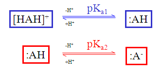
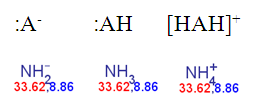
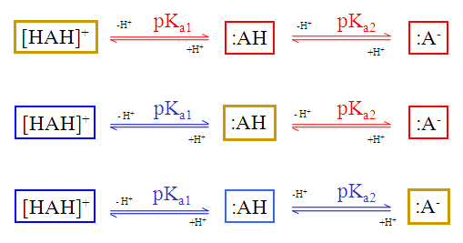
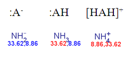
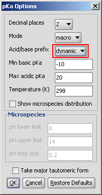

The static (default setting) red & blue colour annotation is related to the following ionization steps:
|  |
|  |
The dynamic (non-default setting) red & blue coloring schema depends on the submitted molecule:
|  |
The result of the previous ammonia example with the non-default pKa calculation:
|  |
Differences between the static and the dynamic red & blue coloring schema:
| static | dynamic | |
|---|---|---|
| Subject of calculation | neutral state of the submitted molecule | the submitted molecule |
| Blue color assigned to | the acid dissociation constant between the neutral base and its conjugated acid | the acid dissociation constant between the submitted base and its conjugated acid |
| Red color assigned to | the acid dissociation constant between the neutral acid and its conjugated base | the acid dissociation constant between the submitted acid and its conjugated base |
| setting in the Options panel |
|
 |